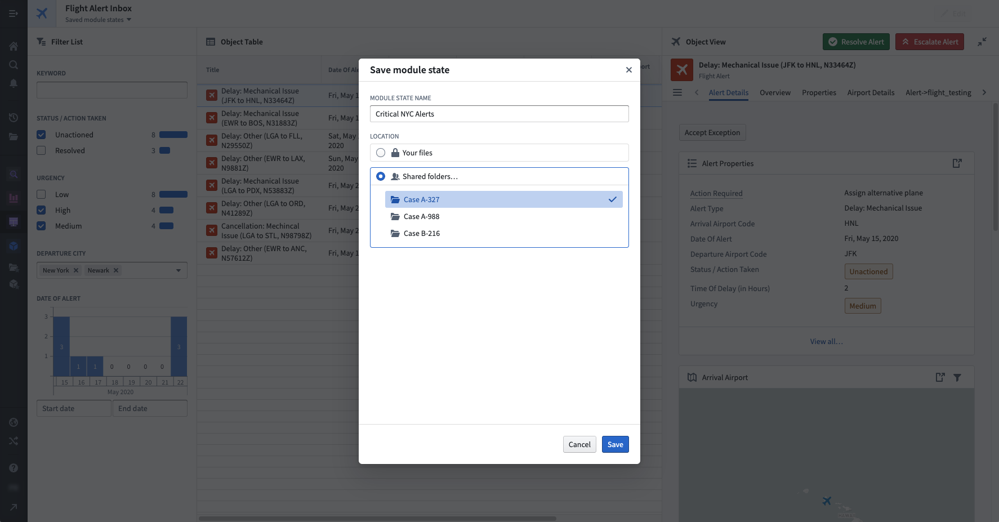
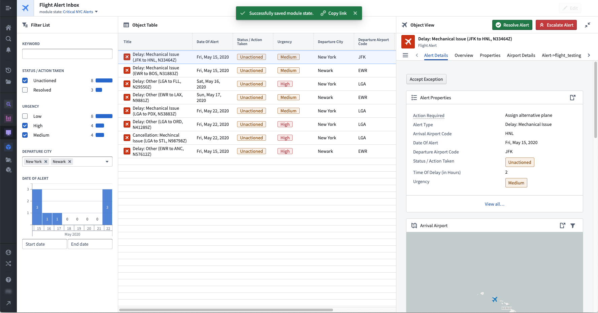
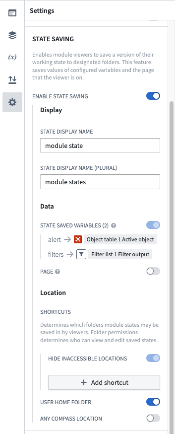
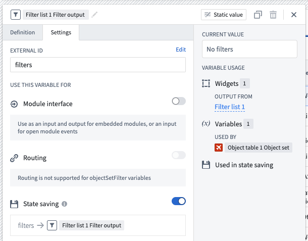

State saving is a powerful Workshop feature that allows module consumers to store the current state of their work within a module and then either return to that saved state or share the saved state with other users.
State saving makes it easier to construct complex, long-running workflows in Workshop and facilitates collaboration between users. Example use cases for state saving include:
Status property of "Unresolved" and a Location property of "Zurich" and then saving that state for future reference.When a state is saved, Workshop is preserving two things: (1) the current values ("states") of variables enabled for use with state saving and (2) optionally, the current page that a user is viewing. In Workshopâs Edit Mode, module builders can decide which variables to use with state saving and also configure other state saving options. Module consumers in Workshopâs View Mode can then save, open, and share states as needed for their workflow.
:::callout{theme="warning"} State saving does not automatically persist variable values across sessions. Enabling state saving for a variable only makes it eligible to be included when a user explicitly saves a state and later reloads that saved state. If you need to persist user preferences without requiring users to manually save and reload states, consider implementing an ontology-backed user preferences pattern where preference values are stored as object properties and loaded automatically on each visit. :::
The following screenshots display an example of state saving. In this case, a module builder has configured state saving to preserve Object Set Filter variable output by the Filter List, which will save the userâs selected filtering criteria for high- and medium-priority unactioned alerts from NYC airports. The module builder has also configured the active Object Set variable output by the Object Table widget, which will save the currently highlighted alert in the table and then displayed in the Object View widget on the right-side of this module. Once this state is saved, the module consumer can easily return to this specific view of NYC flight alerts in the future or share the view with other users as a link.


In Workshopâs Edit Mode, a builder user can enable state saving with the following three steps, explained in detail below:
Open the Settings panel by selecting the settings icon (). Within this panel, enable the Enable State Saving toggle as seen below.

Open the Variables panel and enable state saving for variables which should have their state saved. To do so, select a variable and then navigate to the settings tab and add an external ID to the variable. The screenshot below shows an example of enabling state saving for an Object Set Filter variable output by a Filter List widget, which will save the userâs selected filtering criteria:

For more information about configuring object set filter variables, including default filters and filter value extraction, see Object set filter variables.
:::callout{theme="neutral"} Variable values are stored within a saved state via their external ID. As a result, modifying a variable's external ID after state saving has been configured may cause previously configured states to reload unsuccessfully.
Modifying a variable's external ID allows a module's configuration to change over time while supporting state saving. For instance, if a module that was initially configured with an Object Dropdown widget (which allows a user to select a single object) is later replaced with an Object Selection widget (which allows a user to select multiple objects), state saving will continue to work as long as the output object set from those widgets uses the same external ID. :::
Within the Settings panel under the State Saving section, you can configure settings for preserving the user's current page within a saved state. You can also set the allowed save location and folder shortcuts for this module's saved states. Folder shortcuts can make it easier to ensure that all shareable states for this module will be saved to the same location.
You can designate any saved state as the default for a module. When a default state is set, Workshop automatically applies it when users revisit the module without a specific saved state in the URL.
To set a default state:
You can also set a new state as the default when initially saving it. To remove a default state designation, use the state saving menu to clear the default setting.
:::callout{theme="warning"} If you delete a saved state that has been designated as the default, Workshop will clear the default setting and display a warning notification. :::
For state saving, the core configuration options are the following:
With state saving, you can preserve values for the following Workshop variable types:
State saving is also supported by widgets which output one of the variable types listed above. Some of the supported widgets include:
Embedding a Workshop module does not carry over the state saving configuration of the embedded module. To save variable values of an embedded module to a saved state, add the desired variables to the child module's module interface and pass in saved state variables from the parent module in the embedded module configuration.
State saving is only available for end-users when platform access is enabled for that user. Users that do not have platform access will not have the ability to access state saving components. Learn more about platform access restrictions.
For module consumers to access state saving options in View Mode, the module header must be visible. If the module header is hidden, the state saving dropdown will not appear in the interface, even if state saving has been properly configured for the module.
State saving requires each user to actively save their state. It does not automatically persist preferences or settings on a per-user basis. If your workflow requires automatic per-user preference storageâsuch as a subscription toggle or a "do not show again" dialog setting that remembers each user's choice without manual interventionâconsider using an ontology object to store and manage these preferences instead.